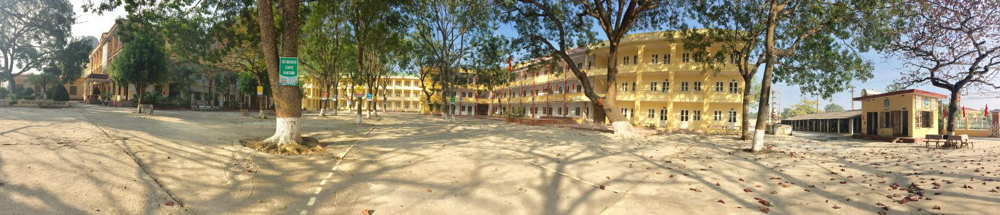

Giới thiệu chung
Tên đơn vị: Trường THPT Hoa Lư A.
Địa điểm đặt trụ sở: Thị trấn Thiên Tôn, huyện Hoa Lư, tỉnh Ninh Bình.
Số điện thoại: 0229 3622 859
Email : nbh-thpthoalua@edu.viettel.vn
- Quá trình thành lập và phát triển:
Trường THPT Hoa Lư A, tiền thân là trường cấp III Lương Văn Tụy B, được thành lập tháng 9 năm 1972, ra đời trong hoàn cảnh cuộc chiến tranh phá hoại của đế quốc Mỹ ngày càng ác liệt; năm học 2016-2017 là năm học thứ 45 của nhà trường. Những năm đầu thành lập, Trường THPT Hoa Lư A chỉ có những lớp học tranh tre, nứa lá, cơ sở vật chất sơ sài, tạm bợ. Hiện nay, thầy và trò nhà trường từng bước vượt lên khó khăn, xây dựng tương đối đồng bộ cơ sở vật chất và hoàn thiện đội ngũ cán bộ, giáo viên có năng lực chuyên môn nghiệp vụ vững vàng và giầu lòng tâm huyết với nghề.
Năm học 2017-2018, nhà trường có 30 lớp, với 1155 học sinh; tổng số cán bộ, giáo viên, nhân viên: 83 người. Trong đó: Giám hiệu 04 người, giáo viên 72 người, hành chính 05 người, hợp đồng ngắn hạn 2 người; chi bộ: 62 Đảng viên; Công đoàn: 81 công đoàn viên; Đoàn trường: 31 chi đoàn (30 chi đoàn học sinh và 1 chi đoàn giáo viên); 06 tổ chuyên môn.Chi bộ có 62 đảng viên, nhiều năm đạt danh hiệu "Chi bộ trong sạch vững mạnh tiêu biểu", là lực lượng nòng cốt, tiên phong trong mọi hoạt động của nhà trường. Tập thể sư phạm đoàn kết, thống nhất, cộng đồng trách nhiệm, biết phát huy nội lực và phát huy truyền thống nhà trường. Đội ngũ cán bộ, giáo viên đủ về số lượng và chủng loại; đa số có năng lực chuyên môn, nghiệp vụ vững vàng, ngày càng trẻ hoá>
Nhà trường luôn thực hiện mục tiêu không ngừng nâng cao chất lượng dạy và học, tích cực hưởng ứng, thực hiện các cuộc vận động, các phong trào thi đua “dạy tốt, học tốt”; “Xây dựng trường học thân thiện, học sinh tích cực”; “lao động giỏi, lao động sáng tạo”; “giỏi việc trường, đảm việc nhà”; cuộc vận động “Mỗi thầy, cô giáo là một tấm gương đạo đức tự học và sáng tạo” gắn với việc “Học tập và làm theo tư tưởng, đạo đức, phong cách Hồ Chí Minh”. Nhà trường luôn đi đầu trong các hoạt động phong trào, văn nghệ, TDTT, ANTT của huyện nhà. Qua đó đã đưa nhà trường trở thành một trong những đơn vị hoàn thành xuất sắc chỉ tiêu nhiệm vụ được giao.
Trong các năm học vừa qua, trường THPT Hoa Lư A đã đạt được rất nhiều thành tích đáng chú ý trong công tác giáo dục của nhà trường, hàng năm số học sinh xếp hạnh kiểm tốt và khá luôn đạt từ 97% đến trên 99%, chất lượng giáo dục ngày được nâng cao, tỉ lệ học sinh đỗ tốt nghiệp THPT đạt từ 99-100%, tỉ lệ học sinh đỗ Đại học, Cao đẳng trên 90%. Trong công tác bồi dưỡng HSG văn hoá, văn nghệ, TDTT, công tác Nghiên cứu khoa học trường luôn nằm trong tốp đầu trong khối các trường THPT tỉnh nhà. Với các thành tích đạt được liên tục đạt danh hiệu Tập thể lao động xuất sắc, trong 9 năm học trường luôn được nhận Cờ thi đua xuất sắc của nghành giáo dục Ninh Bình, nhận được nhiều Bằng khen của Chủ tịch UBND tỉnh, Bằng khen của Thủ tướng Chính phủ, được các cấp lãnh đạo và nhân dân tin tưởng. Đặc biệt năm 2005, 2011 nhà trường được Chủ tịch nước tặng Huân chương Lao động hạng Ba và hạng Nhì. Liên tục trong nhiều năm liền Chi bộ Đảng của nhà trường luôn đạt danh hiệu Chi bộ trong sạch, vững mạnh tiêu biểu.
Trong năm học vừa qua 2016 – 2017, trường đã được Bộ giáo dục công nhận trường đạt chuẩn Quốc gia và được đề nghị tặng Cờ thi đua của Chính phủ, góp phần giúp huyện Hoa Lư hoàn thành các tiêu chuẩn về đích nông thôn mới giai đoạn 2016 – 2020.